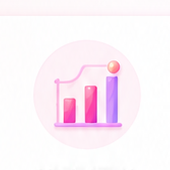
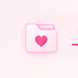
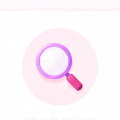
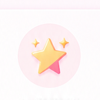
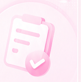

状态等级 问卷生成
垮脸自救实验室
上镜状态管理
3 分钟上镜状态测评
测出你的
测出你的
上镜显垮类型
结合休息、姿态、妆造与拍照习惯，生成一份可解释的上镜状态分析。

上镜状态档案你的脸为什么一上镜就显累？
完成测评后获得状态类型、主要影响因素和当天可以执行的建议。

影响因素 可解释
上镜建议 专属匹配
欢迎回来
你的状态档案已生成
继续查看报告，或完成今天的上镜状态管理。
7 天自救打卡 · Day 1 / 7
今天完成 3 个轻量任务，不追求用力过猛。
我的历史报告
登录后同步状态测评
第 1 / 10 题
Q
补充信息
可多选测评完成
先看核心结论，再决定是否保存
登录用于跨页面保存报告和 7 天进度。照片辅助是可选项，不会挡住问卷版报告。
报告包含
照片增强分析
上传3张照片，生成更贴近你的完整报告
报告生成前的最后一步
补充照片后，分析会更真实
请按同一光线环境拍摄，避免重滤镜与夸张表情。照片仅用于本次上镜状态分析。

原型演示中，点击照片卡片即可模拟上传。
拍摄要求
-
自然光或均匀光线避免强阴影和过曝。✓
-
露出完整下颌线头发不要遮挡脸颊与下颌。✓
-
不使用重滤镜保持真实肤色与轮廓。✓
-
仅用于本次分析不做人脸建档，不用于其他用途。✓
个人分析报告
你的上镜状态类型
姿态疲惫型
轻度 · 建议调整根据问卷回答生成
主要影响因素
由高到低今日快速建议
轻量执行加入我的 7 天状态管理
把主要影响因素拆成每天 3 个可以执行的小任务。
本报告仅用于上镜状态参考，不构成医疗或美容诊断。
重要场合准备
24 小时上镜准备
明天有重要场合？
选择场景，先处理最影响上镜状态的三个细节。